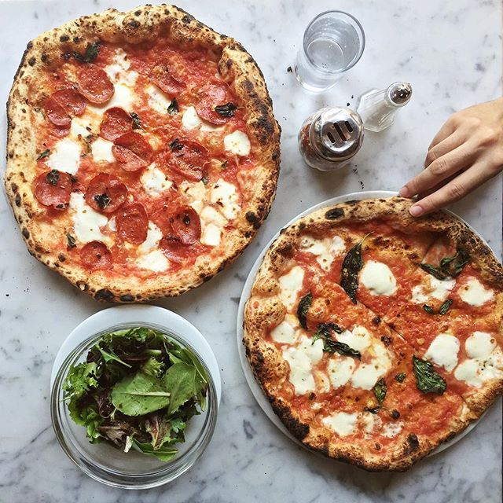
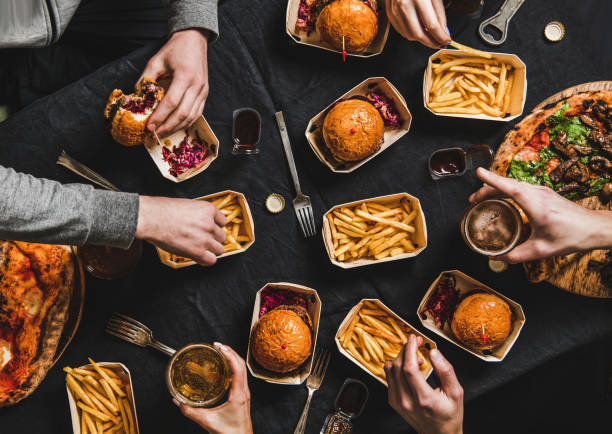
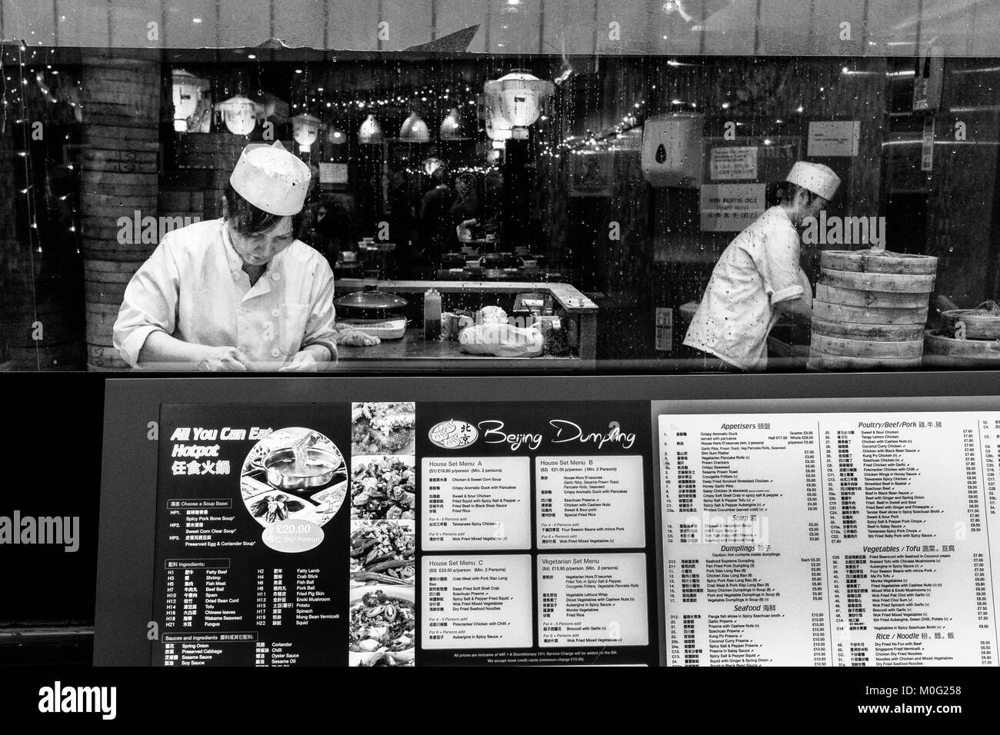
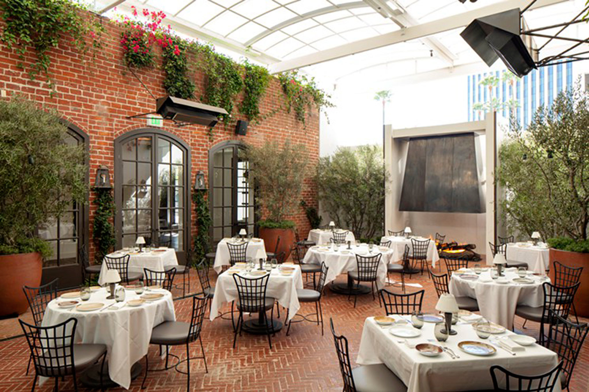

Welcome to our Restuarant!!
About us
 
What’s better than having a crispy melty pizza, you ask?
Having that crispy and melty pizza in the comfort of your own home with the ones you love, we say.
Our Restuarant makes one of the best delicasies.
We don’t just make pizza. We make people happy.
We create food we’re proud to serve it,with a smile.
The service feels like home. And the customers are treated like family.
We are all about quality you can trust.
our sole mission is making the freshest and tastiest Pizza around.
Ranging from Pizzas,Burgers,fries to milkshakes.
There is something for everyone here.
The vegetarians, non-vegetarians, the sides’ lovers and also the ones who love to have something sweet by the time they reach the last bite of the last slice of pizza slice.
Founded By

Founded by one of the best chef Itachi in the year 1997 it still runs under his guidance.
Inspired by his own search for delicious pizza options,he started to wonder if there was a better way of making pizzas
He ended up inventing our secret sauce which is loved by millions.
He ran a restaurant in Italy. Preparing food, rushing through descriptions of minute details and garnishing, makes him animated.
It still continues to make hand-made thin crusts with freshly prepared doughs everyday.
With our secret sauce that comes into picture the taste of the pizza is exotic.
As of today,we have opened outlets all across the world.
People leave our restaurant with beautiful smiles.
Aesthetics

With a very calm and cozy place dine,
Our eateryhouse gives out good vides and a beautiful place to eat or to hangout with your friends.
The décor, layout and other aspects of appearance like furniture are beautifully arranged.
Maintaining a modern aesthetic that fits with your restaurant’s brand and caters to what your customers are expecting can help you make a good impression on your guests.
Daily cleaning and safety measures are implemented to make our guests feel comfortable and at home in our restaurant.
Floors are cleaned and well-maintained to prevent slips and trips.
We ensure our space has shining floors can help keep our restaurant fresh, modern and welcoming.
Not only are plants beautiful and relaxing, but help purify the air.
They also make a visual connection for guests about the freshness of your ingredients.